Research Grants
Principal Investigator (*PI)
Co-Investigator (**Co-I)
2024.04 ~ 2027.03
KAKENHI Grant-in-Aid for Scientific Research (B) (Co-I** | 24K03260 | 18,460,000 JPY )
2024.04 ~ 2026.03
KAKENHI Grant-in-Aid for Early-Career Scientists (PI* | 24K20786 | 2,730,000 JPY )
2022.04 ~ 2024.03
KAKENHI Grant-in-Aid for Early-Career Scientists (PI* | 22K17904 | 3,770,000 JPY )
Awards | Scholarships | Travel Grants
-
AAT Presentation Award Sep 2025

Awarded the Presentation Award in the Audio & Acoustic Technology (AAT) Session at GCCE 2025 for outstanding presentation quality. -
Awaya Kiyoshi Award March 2025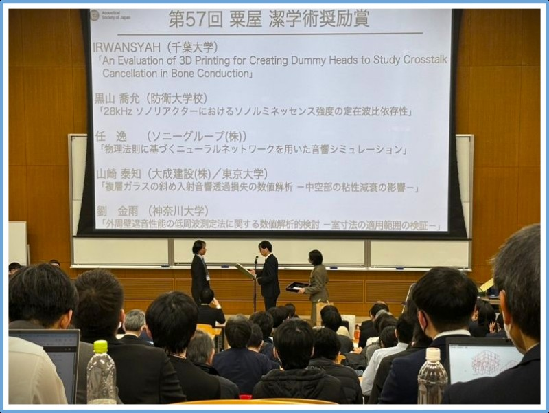
I was awarded the Awaya Kiyoshi Academic Incentive Award from the Acoustical Society of Japan for my contributions to acoustics research.
- List of the winners -
Life Eng. Research Award Sep 2023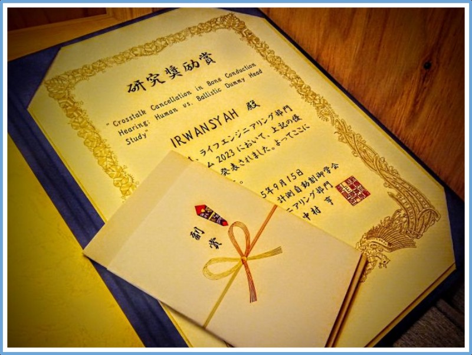
I was awarded the Research Encouragement Award from SICE's Life Engineering Division in Kawagoe, Japan, for young researchers under 35.
- Award Announcement
- SICE-LE Division Website -
Nakatani Travel Grant July 2023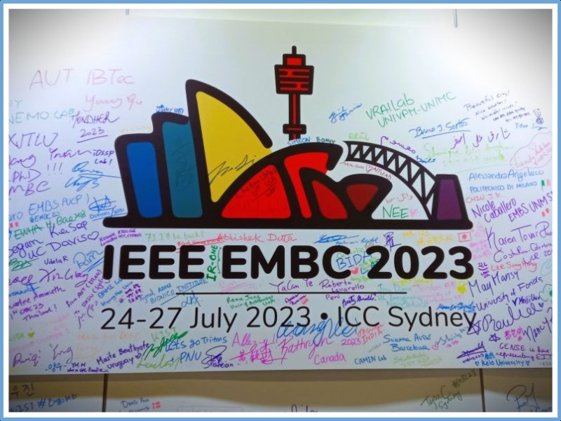
I was awarded a Technical Exchange Program Subsidy by the Nakatani Foundation to participate in an international conference, IEEE EMBC in Australia.
- About Nakatani Foundation -
Marubun Travel Grant January 2023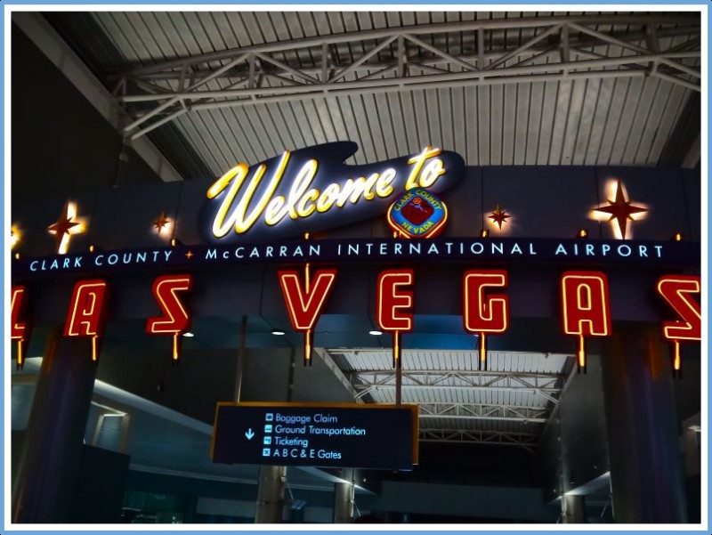
I was awarded an International Exchange Grant by the Marubun Foundation to participate in an international conference, IEEE ICCE in USA.
- 国際会議参加レポート (Participation Report) -
ICA-ASA Young Scientist October 2022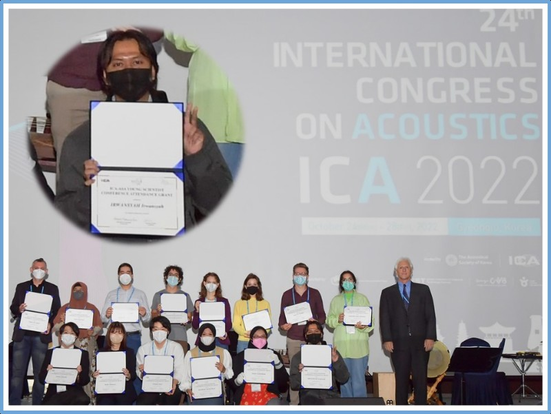
I received ICA-ASA Young Scientist Grant at 24th International Congress on Acoustics (ICA),
Gyeongju, South Korea. -
Best Paper Award October 2021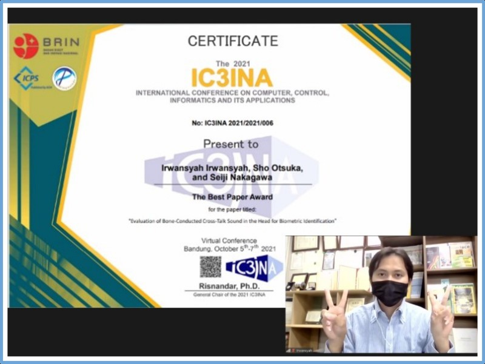
1st Place Best Paper Award
International Conference on Computer, Control, Informatics and Its Applications (IC3INA).
Bandung - Indonesia -
Best Presentation Award October 2021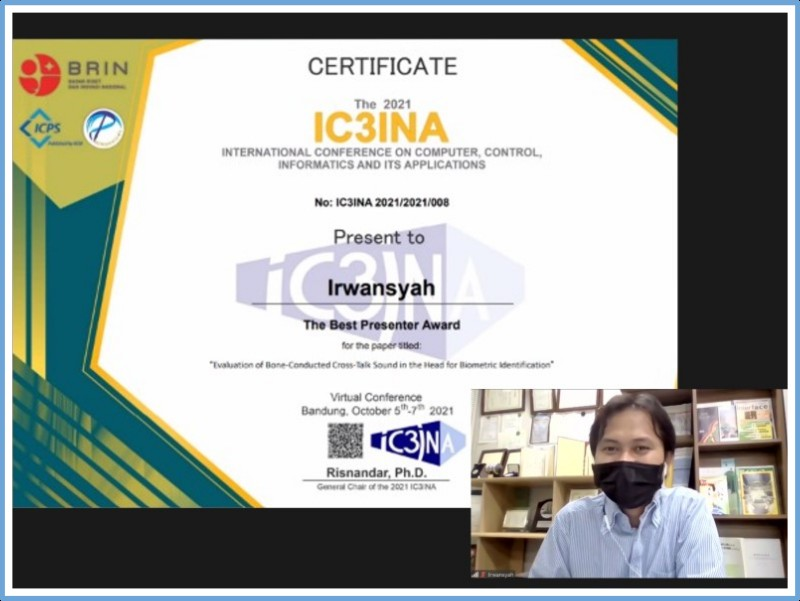
1st Place Best presentation, voted by audiences
International Conference on Computer, Control, Informatics and Its Applications (IC3INA).
Bandung - Indonesia -
3rd Favorite Winner September 2020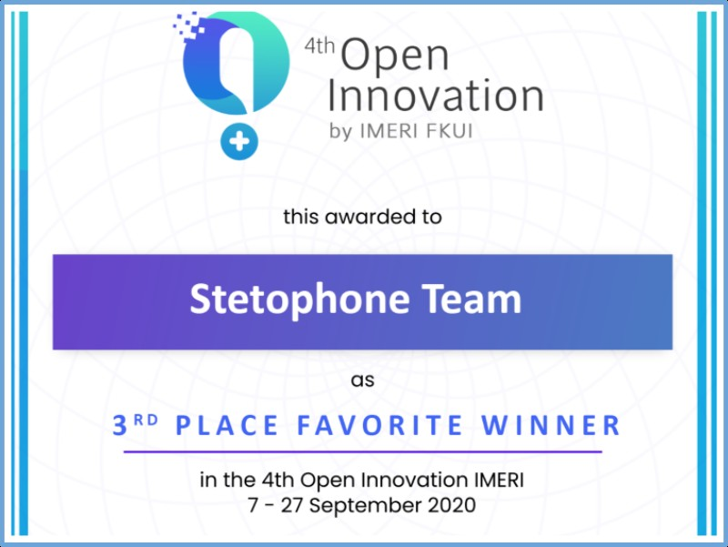
4th Open Innovation Indonesian Medical Education and Research Institute (OI-IMERI 2020).
Jakarta - Indonesia
- YouTube: Our StethoPhone Explainer Video -
Best Paper and Presentation Award September 2019
-
Finalist November 2018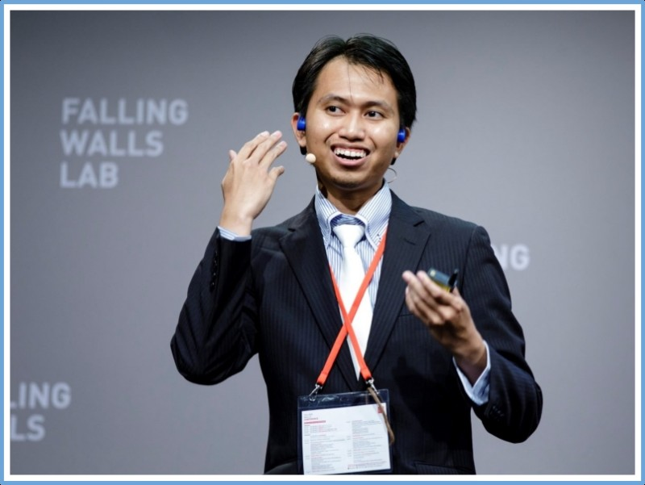
Falling Walls Lab Finale in Berlin, Germany. -
Invited Young Lecturer October 2018Invited Young Lecturer (IYL) Program, Sendai - JAPAN
Tohoku Universal Acoustical Communication Month.
24 individuals were chosen as IYLs, including me, and we each received a full travel grant.
link of the event
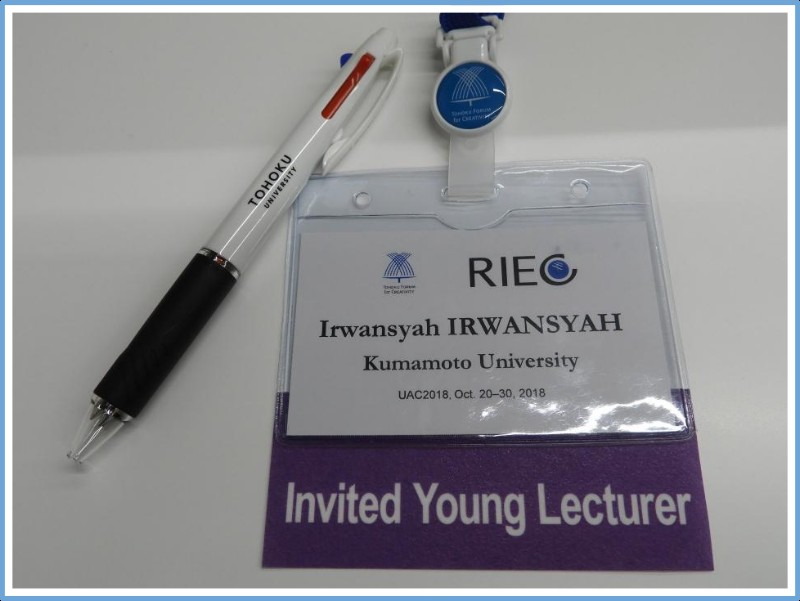 -
Student Paper Award October 2018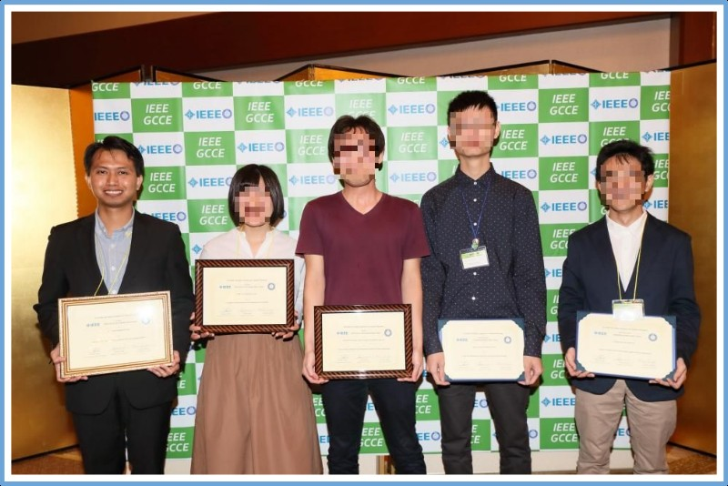
1st Prize Student Paper Award, Nara - JAPAN
IEEE Global Conference on Consumer Electronics
list of the winners -
2nd Place FWLT 2018 May 2018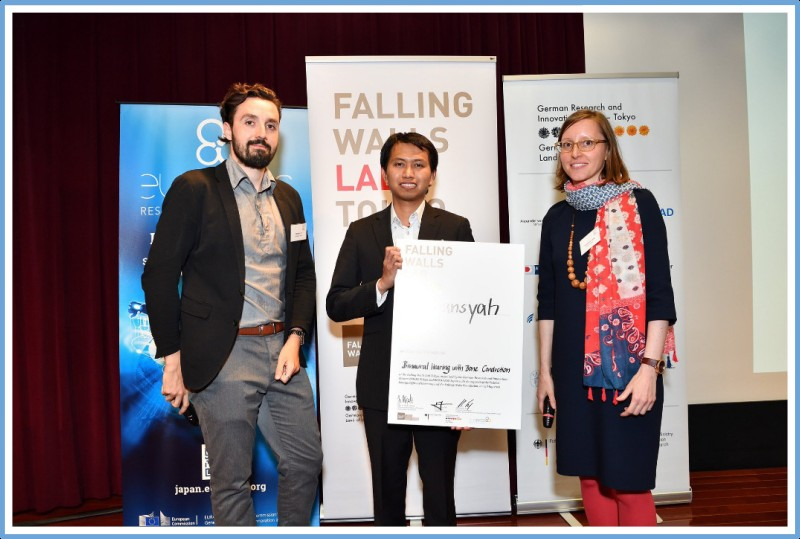
2nd Place, Falling Walls Lab Tokyo (FWLT) - JAPAN.
Links for the News:
DWIH Tokyo Web
DWIH Tokyo Twitter
University of Tokyo Web
University of Tokyo Web (in Japanese) -
Student Award March 2018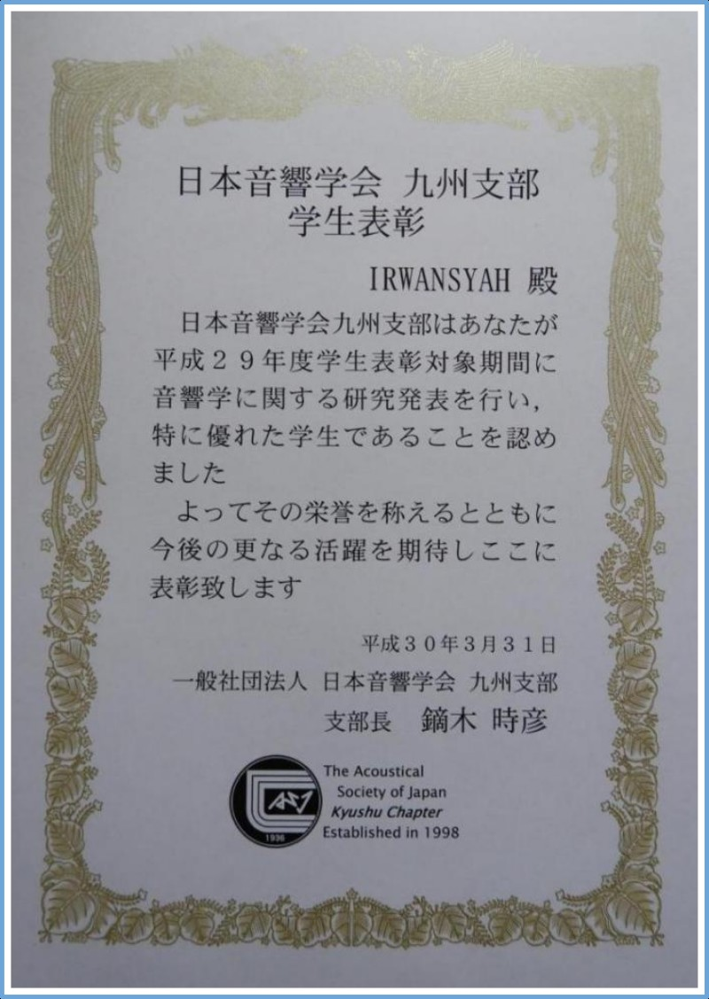
Student Award (Doctoral Program), Fukuoka - JAPAN.
The Acoustical Society of Japan - Kyushu Chapter.
A link to the list of selected students -
Best Student Paper November 2017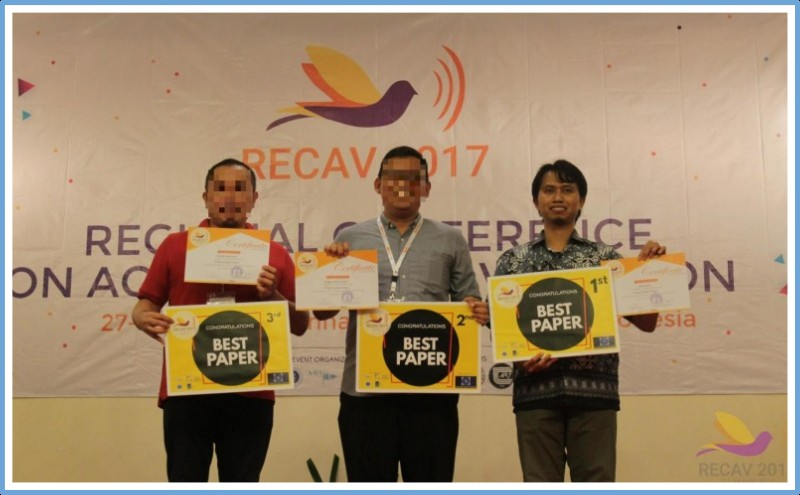
1st Place Student Paper Award, Bali - INDONESIA
Regional Conference on Acoustics and Vibration. -
Favorite Team December 2016
-
MEXT Scholarship October 2016Recipient of MEXT Scholarship for Doctoral Program at Kumamoto University.
-
Student Presentation Award Sept 2016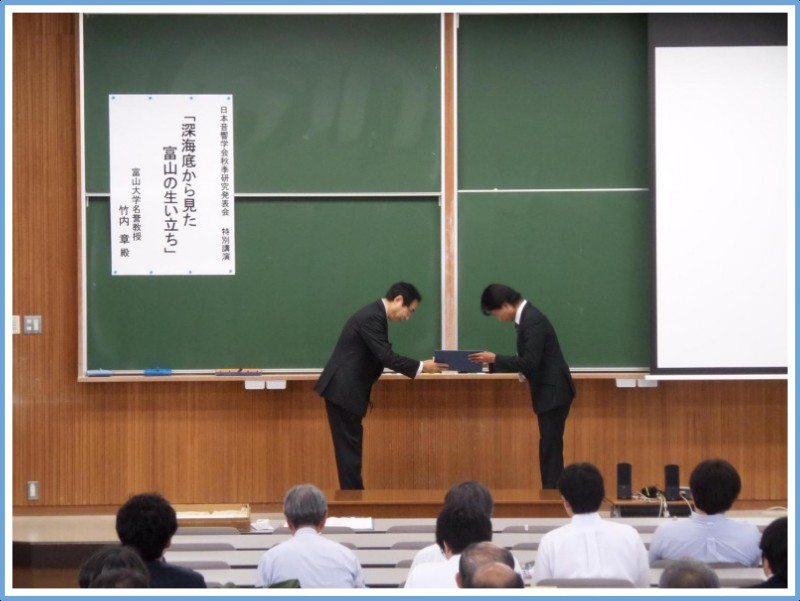
Student Presentation Award,Toyama - JAPAN
The Spring Meeting of the Acoustical Society of Japan -
Student Award March 2016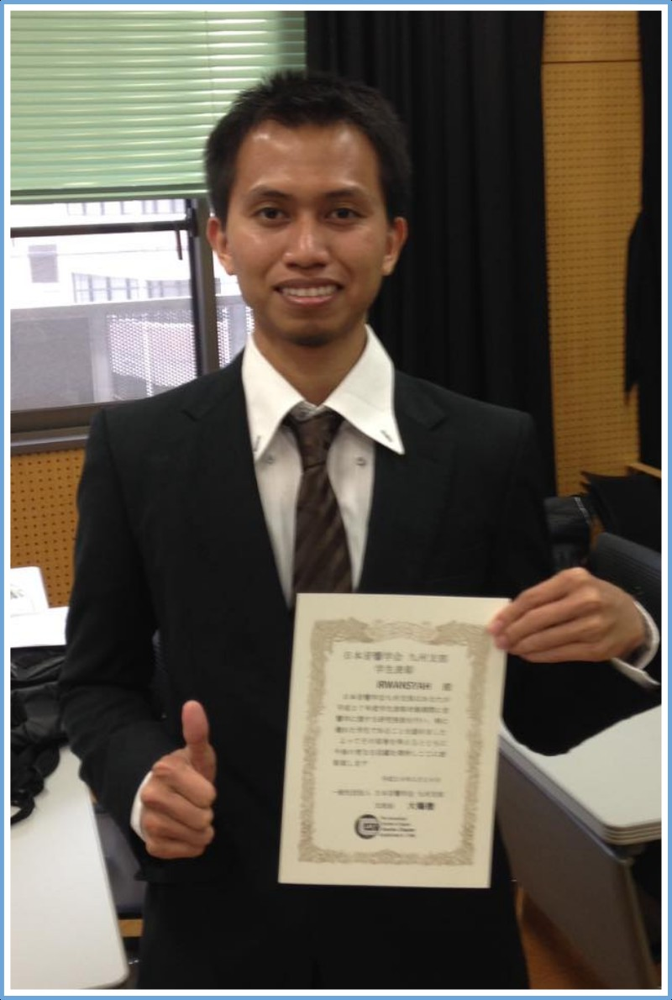
Student Award (Master Program), Fukuoka - JAPAN.
The Acoustical Society of Japan - Kyushu Chapter.
A link to the list of selected students -
Student Poster Award October 2015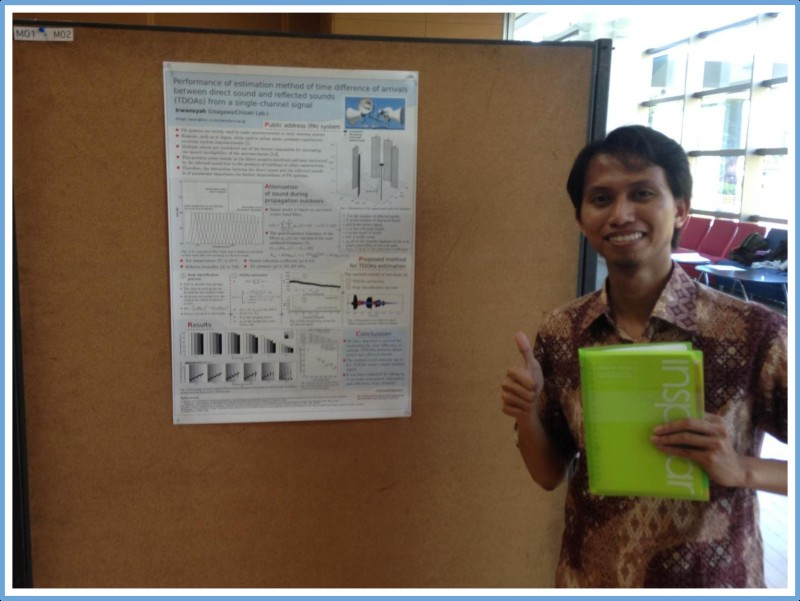
Best Student Poster,Kumamoto - JAPAN.
Department of Human & Environmental Informatics, Kumamoto University. -
MEXT Scholarship October 2014Recipient of MEXT Scholarship for Master Program at Kumamoto University.
Publications
A graphical representation of my research activities over the years
(ORCID, Scopus or Google Scholar)
@article{irwan:JJAP2026,
title = {Suppression of distortion product otoacoustic emissions induced by bone-conducted ultrasonic stimulation},
year = {2026}
}
@InProceedings{taneishi:189ASA,
title = {Effect of static clenching on perception of bone-conducted sounds presented to the facial parts: Assessments by hearing threshold and ear-canal sound pressure},
year = {2025}
}
@InProceedings{irwan:USE46,
title = {Distortion Product Otoacoustic Emission Suppression Induced by Bone-Conducted Ultrasound},
year = {2025}
}
@Proceedings{tokiwa:LE2025,
title = {音刺激がヒトの立位姿勢制御に与える影響とその機序の解明},
year = {2025}
}
@Proceedings{irwan:LE2025,
title = {Development of a Phantom Head for Bone-Conduction and Spatial Hearing Studies},
year = {2025}
}
@Proceedings{tokiwa:84thAMJSER-BC-Acceleration,
title = {骨導音による健常成人の姿勢制御向上と側頭骨振動特性の評価},
year = {2025}
}
@InProceedings{irwan:GCCE2025,
title = {"IMD Suppression in Silicone Pinnae: Toward Single-Channel DPOAE Screening},
year = {2025}
}
@article{irwan:IEEEaccess2025,
title = {DPOAE Responses in Humans and Ear Models: Can a Single-Loudspeaker Approach Match the Two-Loudspeaker Technique?},
year = {2025}
}
@Proceedings{irwan:JSMBE64-DPOAE,
title = {Evaluating Single-Loudspeaker DPOAE Measurement: Findings from 50 Human Ears},
year = {2025}
}
@Proceedings{tokiwa:JSMBE64-BC-Acceleration,
title = {骨伝導がヒトの立位姿勢制御に及ぼす効果の検証 ―第２報―},
year = {2025}
}
@Proceedings{irwan:ASJspring2025-DPOAE,
title = {DPOAE Measurements Using a Single Loudspeaker: Can They Match the Performance of Two-Loudspeaker Techniques?},
year = {2025}
}
@Proceedings{taneishi:ASJspring2025,
title = {顔面部位での骨伝導音聴取における食い縛りの影響},
year = {2025}
}
@article{irwan:HardwareX2024,
title = {3D Printed Dummy Heads for Crosstalk Cancellation Studies in Bone Conduction},
year = {2025}
}
@Proceedings{taneishi:YIW2024,
title = {食い縛りが顔面呈示骨伝導音の検出閾に与える影響},
year = {2024}
}
@InProceedings{irwan:GCCE2024,
title = {Using Forehead Accelerometer Data to Estimate Bone-Conduction Hearing Thresholds: Feasibility and Initial Findings},
year = {2024}
}
@Proceedings{irwan:ASJautumn2024-DummyHead,
title = {An Evaluation of 3D Printing for Creating Dummy Heads to Study Crosstalk Cancellation in Bone Conduction},
year = {2024}
}
@Proceedings{irwan:JSMBE63,
title = {Comparative Study on Crosstalk Cancellation in Bone Conduction: Human Subjects vs. Dummy Skull Model with Embedded Accelerometers},
year = {2024}
}
@article{irwan:AST2024,
title = {Pinna Hardness and Vibrator Placement: Their Effects on Bone Conduction Through the Pinna},
year = {2024}
}
@Proceedings{irwan:ASJautumn2024-HumanPinnas,
title = {Evaluating Cartilage Conduction: A Comparative Study of Sound Transmission in Artificial and Human Pinnas},
year = {2024}
}
@article{irwan:MethodsX2023,
title = {Unilateral Crosstalk Cancellation via Bone Conduction: Methods and Evaluation},
year = {2023}
}
@InProceedings{irwan:USE44,
title = {Exploring the Impact of Pinna Hardness and Vibrator Placement on Bone Conduction Through the Pinna},
year = {2023}
}
@Proceedings{irwan:ASJautumn2023-Pinna,
title = {Comparing Sound Propagation in Silicone Pinna Models: The Effect of Vibrator Positioning},
year = {2023}
}
@Proceedings{irwan:ASJautumn2023-Crosstalk,
title = {Towards Optimized Crosstalk Cancellation in Bone Conduction: An In-depth Exploration of FxLMS and Lateralization},
year = {2023}
}
@Proceedings{irwan:LE2023,
title = {Crosstalk Cancellation in Bone Conduction Hearing: Human vs. Ballistic Dummy Head Study},
year = {2023}
}
@InProceedings{akane:INTERNOISE2023,
title = {Effects of size and hardness of pinna on cartilage conduction hearing: Comparison between auricular hematoma and normal subjects},
year = {2023}
}
@InProceedings{irwan:INTERNOISE2023,
title = {FxLMS and Lateralization: A Combined Strategy for Crosstalk Cancellation in Bone Conduction},
year = {2023}
}
@InProceedings{irwan:EMBC2023,
title = {Cancelling Crosstalk Sound in Bone Conduction Hearing: An Accelerometer-Based Approach},
year = {2023}
}
@InProceedings{akane:EMBC2023,
title = {Effects of hardness and dimension of pinna and auricular hematoma on detection threshold of cartilage conduction},
year = {2023}
}
@Proceedings{irwan:JSMBE2023,
title = {骨伝導の聞こえの改善を目指したクロストーク・キャンセリング手法の開発},
year = {2023}
}
@InProceedings{blelone:ISPA2021,
title = {Fabrication of low-cost 3D printed stethoscope: Material selections and acoustical performance},
year = {2023}
}
@Proceedings{irwan:ASJspring2023,
title = {An Inexpensive 3D-Printed Bell Stethoscope Connected to a Smartphone for Low-Resource Settings},
year = {2023}
}
@InProceedings{irwan:ICCE2023,
title = {Real-Time Implementation of Unilateral Crosstalk Cancellation Based on Bone Conduction},
year = {2023}
}
@Proceedings{irwan:YIW2022,
title = {Towards Real-Time Crosstalk Cancellation for Application in Bone Conduction Hearing Devices},
year = {2022}
}
@Proceedings{akane:YIW2022,
title = {耳介の形態・硬度が軟骨伝導の検出閾特性に及ぼす影響},
year = {2022}
}
@article{irwan:IEEEaccess2022,
title = {Improved Low-Frequency Crosstalk Cancellation in Bone Conduction Using Bone Transducers and Probe Microphone},
year = {2022}
}
@InProceedings{irwan:ICA2022,
title = {Effects of in-ear-sensor type on bone-conduction-based crosstalk cancellation: an assessment by tone reception thresholds},
year = {2022}
}
@Proceedings{irwan:ASJautumn2022,
title = {Unilateral Crosstalk Cancellation in Bone Conduction Using an Accelerometer Placed at the Mastoid},
year = {2022}
}
@Proceedings{akane:ASJautumn2022,
title = {Effects of morphology and hardness of the pinna and gender on detection threshold of cartilage conduction},
year = {2022}
}
@Proceedings{irwan:ASJspring2022,
title = {Measurement of Tone Reception Thresholds With and Without Bone-Conduction-Based Crosstalk Cancellation},
year = {2022}
}
@InProceedings{irwan:LifeTech2022,
title = {Development of Acoustically Optimized, 3D-Printed Stethoscope for Telehealth},
year = {2022}
}
@InProceedings{irwan:IC3INA2021,
title = {Evaluation of Bone-Conducted Cross-Talk Sound in the Head for Biometric Identification},
year = {2021}
}
@article{irwan:UAC,
title = {In-ear microphone measures in the ear canal with bone conduction stimulation: an application for estimating a cross-talk compensation filter},
year = {2020}
}
@misc{Marinah:JTech,
title = {Analisis Matematis Pengelasan Grey Cast Iron menggunakan Proses GTAW dengan dan Tanpa Preheat},
year = {2021}
}
@InProceedings{fajar:ICAST2019,
title = {Is Zero Electricity Cost Cryptocurrency Mining Possible? Solar Power Bank on Single Board Computers},
year = {2019}
}
@article{irwan:VinPS2019,
title = {Binaural speech segregation system on single board computer},
year = {2019}
}
@InProceedings{irwan:ICA2019,
title = {Estimation of cross-talk compensation filter using bone conduction ear microphone},
year = {2019}
}
@Proceedings{kai:IEICE,
title = {On speaker identification under multiple-talker condition using frequency domain binaural model},
year = {2019}
}
@Proceedings{mori:IEICE,
title = {Implementation to solve a front-back confusion on frequency domain binaural model},
year = {2019}
}
@article{irwan:ASTletter,
title = {Bone conduction microphone measures in the external auditory canal: an application
for implementing cross-talk cancellation for bone-conducted sound},
year = {2019}
}
@InProceedings{irwan:GCCE2018,
title = {Open-Source Raspberry Pi Hearing Assistance Device with Consumer Hardware},
year = {2018}
}
@Proceedings{bagus:ASJautumn,
title = {Application of Frequency Domain Binaural Model for Keyword Spotting on Simultaneous Speech},
year = {2018}
}
@Proceedings{mitarai:IEICE,
title = {Real-time implementation of frequency domain binaural model-based speech segregation by using sound source direction information obtained by a webcamera},
year = 2018
}
@Proceedings{kuse:IEICE,
title = {On multiple-loudspeaker system for simultaneous reproduction of two sound sources},
year = 2018
}
@InProceedings{kuse:YKJCA,
title = {Development of a Speaker Array System to Control Directivity Characteristics in Low Frequency Range},
year = {2017}
}
@misc{ernawita:JFA,
title = {Preparasi dan Karakterisasi Dye-sensitized Solar Cell (DSSC) dengan Pewarna Ekstrak Jeruk: Pengaruh Variasi Komposisi Karotenoid dan Flavonoid Terhadap Efisiensi Sel Surya},
year = {2017}
}
@Proceedings{irwan:ASJkyushu,
title = {Frequency Domain Binaural Model (FDBM)-Based Speech Segregation: Discussion on Buffer Size for Low-Latency Real-Time Processing using Single Board Computer},
year = {2017}
}
@InProceedings{irwan:ICSE2017,
title = {Real-Time Binaural Speech Segregation using a Single Board Computer and In-Ear Microphones/Earphones: Low-Cost Hearing Aids for Use in Research and Education},
year = {2017}
}
@InProceedings{irwan:RECAV2017,
title = {Performance Evaluation of a Back-to-Back Speaker System using a Single Board Computer as a Digital Signal Processor},
year = {2017}
}
@InProceedings{kai:ICAST2017,
title = {Real-Time Frequency Domain Binaural Model-Based Speech Segregation using a Single Board Computer: Application for Binaural Hearing Aids},
year = {2017}
}
@InProceedings{irwan:TENCON2017,
title = {Application of Active Control Technique on a Bone Conduction Headphone for Estimating a Cross-talk Compensation Filter},
year = {2017}
}
@InProceedings{irwan:INTERNOISE46,
title = {Development of a Semi-Circular Speaker Array System to Control Low-Frequency Radiation Pattern},
year = {2017}
}
@article{irwan:AST2016,
title = {Estimation of time difference of arrivals between direct sound and reflected sounds using time-frequency information of a single-channel signal},
year = {2016}
}
@InProceedings{irwan:ICOMPAC,
title = {A Theoretical Study on Directivity Control of Multiple-Loudspeaker System with a Quadrupole Radiation Pattern in Low Frequency Range},
year = {2016}
}
@Proceedings{irwan:ASJautumn2016,
title = {Outdoor obstacles localization via the intersection of multiple ellipses},
year = {2016}
}
@Proceedings{irwan:ASJspring2016,
title = {Dynamic threshold for a peak detection of estimation method of time difference of arrivals between direct sound and reflected sounds},
year = {2016}
}
@Proceedings{irwan:IEICE,
title = {Estimation of sound pressure levels of direct Sound and reflected sounds based on single-channel signal separation},
year = 2015
}
@Proceedings{irwan:ASJautumn,
title = {Performance of estimation method of time difference of arrivals between direct sound and reflected sounds from a single-channel signal},
year = {2015}
}
@Proceedings{Onoguchi:IEICE,
title = {Estimation of arrival time differences between direct and reflected sounds from monaural observed signal},
year = 2015
}
@InProceedings{fitri:ISPHOA,
title = {Radial line method for rear-view mirror distortion detection},
year = {2014}
}
@InProceedings{irwan:SEACMA,
title = {Performance evaluation of two-microphone separation with convolutive speech mixtures},
year = {2013}
}
@Proceedings{irwan:SNMA,
title = {Teknik Pemisahan Sinyal Suara menggunakan Deteksi Puncak pada Scattering Plot},
year = {2013}
}
@InProceedings{kusumawardhani:IJCCS,
title = {Application of concentric circle method for detection of rear-view mirror distortion},
year = {2012}
}
The papers listed below are organized according to research subject matter.
- Irwansyah, Naoya Takahashi, Sho Otsuka, Seiji Nakagawa, "Suppression of distortion product otoacoustic emissions induced by bone-conducted ultrasonic stimulation," Japanese Journal of Applied Physics (Special Issue: USE2025), 2026. (Type: Journal Article) (doi: 10.35848/1347-4065/ae34ba)
- Irwansyah, Naoya Takahashi, Sho Otsuka, Seiji Nakagawa, "Distortion Product Otoacoustic Emission Suppression Induced by Bone-Conducted Ultrasound," The 46th Symposium on UltraSonic Electronics (USE2025), 2025. (Type: International Conference) (@Matsue, JAPAN)
Ultrasonic Hearing(2)
- Irwansyah, Sho Otsuka, Seiji Nakagawa, "IMD Suppression in Silicone Pinnae: Toward Single-Channel DPOAE Screening," IEEE 14th Global Conference on Consumer Electronics, 2025. (Type: International Conference) (doi: 10.1109/GCCE65946.2025.11275415) (@Osaka, JAPAN)
- Irwansyah, Sho Otsuka, Seiji Nakagawa, "DPOAE Responses in Humans and Ear Models: Can a Single-Loudspeaker Approach Match the Two-Loudspeaker Technique?," IEEE Access, 2025. (Type: Journal Article) (doi: 10.1109/ACCESS.2025.3579475)
- Irwansyah, Sho Otsuka, Seiji Nakagawa, "Evaluating Single-Loudspeaker DPOAE Measurement: Findings from 50 Human Ears," The 64th Annual Conference of Japanese Society for Medical and Biological Engineering, 2025. (Type: Domestic Conference) (J-GLOBAL) (@Fukui, JAPAN)
- Irwansyah, Sho Otsuka, Seiji Nakagawa, "DPOAE Measurements Using a Single Loudspeaker: Can They Match the Performance of Two-Loudspeaker Techniques?," The Spring meeting of the Acoustical Society of Japan, 2025. (Type: Domestic Conference) (J-GLOBAL) (@Saitama, JAPAN)
Distortion Product Otoacoustic Emissions(4)
- Maria Taneishi, Irwansyah, Sho Otsuka, Seiji Nakagawa, "Effect of static clenching on perception of bone-conducted sounds presented to the facial parts: Assessments by hearing threshold and ear-canal sound pressure," 189th Meeting of the Acoustical Society of America, 2025. (Type: International Conference) (@Hawaii, USA)
- Irwansyah, Sho Otsuka, Seiji Nakagawa, "Development of a Phantom Head for Bone-Conduction and Spatial Hearing Studies," ライフエンジニアリング部門シンポジウム2025, 2025. (Type: Domestic Conference) (@Chiba, JAPAN)
- 種石 まりあ, Irwansyah, 大塚 翔, 中川 誠司, "顔面部位での骨伝導音聴取における食い縛りの影響," The Spring meeting of the Acoustical Society of Japan, 2025. (Type: Domestic Conference) (J-GLOBAL) (@Saitama, JAPAN)
- 種石 まりあ, Irwansyah, 大塚 翔, 中川 誠司, "食い縛りが顔面呈示骨伝導音の検出閾に与える影響," 日本生体医工学会関東支部 若手研究者発表会, 2024. (Type: Domestic Conference) (@Tsukuba, JAPAN)
- Irwansyah, Sho Otsuka, Seiji Nakagawa, "Using Forehead Accelerometer Data to Estimate Bone-Conduction Hearing Thresholds: Feasibility and Initial Findings," IEEE 13th Global Conference on Consumer Electronics, 2024. (Type: International Conference) ( doi: 10.1109/GCCE62371.2024.10760297) (@Kitakyushu, JAPAN)
Bone-Conduction Hearing(5)
- 常盤達司, 永山花香，Irwansyah，Qin Xiuyuan，中川誠司，工田昌也, "音刺激がヒトの立位姿勢制御に与える影響とその機序の解明," ライフエンジニアリング部門シンポジウム2025, 2025. (Type: Domestic Conference) (@Chiba, JAPAN)
- 永山花香，Irwansyah，Qin Xiuyuan，夕田祥史，中川誠司，常盤達司, "骨導音による健常成人の姿勢制御向上と側頭骨振動特性の評価," 第84回日本めまい平衡医学会総会・学術講演会, 2025. (Type: Domestic Conference) (@Yokohama, JAPAN)
- 永山花香，Irwansyah，Qin Xiuyuan，夕田祥史，中川誠司，常盤達司, "骨伝導がヒトの立位姿勢制御に及ぼす効果の検証 ―第２報―," The 64th Annual Conference of Japanese Society for Medical and Biological Engineering, 2025. (Type: Domestic Conference) (@Fukui, JAPAN)
Human Balance and Stability(3)
- Irwansyah, Sho Otsuka, Seiji Nakagawa, "3D Printed Dummy Heads for Crosstalk Cancellation Studies in Bone Conduction," HardwareX, 2025. (Type: Journal Article) ( doi: 10.1016/j.ohx.2024.e00618)
- Irwansyah, Sho Otsuka, Seiji Nakagawa, "An Evaluation of 3D Printing for Creating Dummy Heads to Study Crosstalk Cancellation in Bone Conduction," The Autumn meeting of the Acoustical Society of Japan, 2024. (Type: Domestic Conference) (J-GLOBAL) (@Osaka, JAPAN)
- Irwansyah, Sho Otsuka, Seiji Nakagawa, "Comparative Study on Crosstalk Cancellation in Bone Conduction: Human Subjects vs. Dummy Skull Model with Embedded Accelerometers," The 63rd Annual Conference of Japanese Society for Medical and Biological Engineering, 2024. (Type: Domestic Conference) (J-GLOBAL) (@Kagoshima, JAPAN)
- Irwansyah, Sho Otsuka, Seiji Nakagawa, "Unilateral Crosstalk Cancellation via Bone Conduction: Methods and Evaluation," MethodsX, 11, p. 102394, 2023. (Type: Journal Article) (doi: 10.1016/j.mex.2023.102394)
- Irwansyah, Sho Otsuka, Seiji Nakagawa, "Towards Optimized Crosstalk Cancellation in Bone Conduction: An In-depth Exploration of FxLMS and Lateralization," The Autumn meeting of the Acoustical Society of Japan, 2023. (Type: Domestic Conference) (J-GLOBAL) (@Nagoya, JAPAN)
- Irwansyah, Sho Otsuka, Seiji Nakagawa, "Crosstalk Cancellation in Bone Conduction Hearing: Human vs. Ballistic Dummy Head Study," ライフエンジニアリング部門シンポジウム2023, 2023. (Type: Domestic Conference) (J-GLOBAL) (@Kawagoe, JAPAN)
- Irwansyah, Sho Otsuka, Seiji Nakagawa, "FxLMS and Lateralization: A Combined Strategy for Crosstalk Cancellation in Bone Conduction," INTER-NOISE 2023, vol. 268, no. 4, pp. 4866-4873, 2023. (Type: Int. Conference) (doi:10.3397/IN_2023_0690) (@Chiba, JAPAN)
- Irwansyah, Sho Otsuka, Seiji Nakagawa, "Cancelling Crosstalk Sound in Bone Conduction Hearing: An Accelerometer-Based Approach," The 45th Int. Conf. of the IEEE Eng. in Medicine and Biology Society, pp. 1-4, 2023. (Type: Int. Conference) (doi:10.1109/EMBC40787.2023.10340123) (@Sydney, AUSTRALIA)
- Irwansyah, 大塚 翔, 中川 誠司, "骨伝導の聞こえの改善を目指したクロストーク・キャンセリング手法の開発," 第62回日本生体医工学会大会, pp. 370-372, 2023. (Type: Domestic Conference) (doi:10.11239/jsmbe.Annual61.370) (@Nagoya, JAPAN)
- Irwansyah, Sho Otsuka, Seiji Nakagawa, "Real-Time Implementation of Unilateral Crosstalk Cancellation Based on Bone Conduction," IEEE International Conference on Consumer Electronics (ICCE), pp. 1-6, 2023. (Type: Int. Conference) (doi:10.1109/ICCE56470.2023.10043413) (@Las Vegas, USA)
- Irwansyah, Sho Otsuka, Seiji Nakagawa, "Towards Real-Time Crosstalk Cancellation for Application in Bone Conduction Hearing Devices," 日本生体医工学会関東支部 若手研究者発表会, 2022. (Type: Domestic Conference) (@Tokyo, JAPAN)
- Irwansyah, Sho Otsuka, Seiji Nakagawa, "Improved Low-Frequency Crosstalk Cancellation in Bone Conduction Using Bone Transducers and Probe Microphone," IEEE Access, Vol. 10, 79201-79212, 2022. (Type: Journal Article) (doi: 10.1109/ACCESS.2022.3194171)
- Irwansyah, Sho Otsuka, Seiji Nakagawa, "Effects of in-ear-sensor type on bone-conduction-based crosstalk cancellation: an assessment by tone reception thresholds," 24th International Congress on Acoustics, 2022. (Type: Int. Conference) (CiNii Articles) (@Gyeongju, KOREA)
- Irwansyah, Sho Otsuka, Seiji Nakagawa, "Unilateral Crosstalk Cancellation in Bone Conduction Using an Accelerometer Placed at the Mastoid," The Autumn meeting of the Acoustical Society of Japan, 2022. (Type: Domestic Conference) (J-GLOBAL) (@Hokkaido, JAPAN)
- Irwansyah, Sho Otsuka, Seiji Nakagawa, "Measurement of Tone Reception Thresholds With and Without Bone-Conduction-Based Crosstalk Cancellation," The Spring meeting of the Acoustical Society of Japan, 2022. (Type: Domestic Conference) (J-GLOBAL) (@Online, JAPAN)
- Irwansyah, Tsuyoshi Usagawa, "In-ear microphone measures in the ear canal with bone conduction stimulation: an application for estimating a cross-talk compensation filter," Acoustical Science and Technology, 41(1), 439-442, 2020. (Type: Journal Article) (doi: 10.1250/ast.41.439)
- Irwansyah, Tsuyoshi Usagawa, "Estimation of cross-talk compensation filter using bone conduction ear microphone," 23rd International Congress on Acoustics, 7232-7238, 2019. (Type: Int. Conference) (doi: 10.18154/RWTH-CONV-239939) (@Aachen, GERMANY)
- Irwansyah, Tsuyoshi Usagawa, "Bone conduction microphone measures in the external auditory canal: an application for implementing cross-talk cancellation for bone-conducted sound," Acoustical Science and Technology, 40(5), 356-359, 2019. (Type: Journal Article) (doi: 10.1250/ast.40.356)
- Irwansyah, Tsuyoshi Usagawa, "Application of Active Control Technique on a Bone Conduction Headphone for Estimating a Cross-talk Compensation Filter," IEEE TENCON 2017, 3099-3104, 2017. (Type: Int. Conference) (doi: 10.1109/TENCON.2017.8228394) (@Penang, MALAYSIA)
Crosstalk in Bone Conduction(19)
- Irwansyah, Sho Otsuka, Seiji Nakagawa, "Pinna Hardness and Vibrator Placement: Their Effects on Bone Conduction Through the Pinna," Acoustical Science and Technology, 2024. (Type: Journal Article) (doi:10.1250/ast.e24.10)
- Irwansyah, Sho Otsuka, Seiji Nakagawa, "Evaluating Cartilage Conduction: A Comparative Study of Sound Transmission in Artificial and Human Pinnas," The Spring meeting of the Acoustical Society of Japan, 2024. (Type: Domestic Conference) (J-GLOBAL) (@Tokyo, JAPAN)
- Irwansyah, Sho Otsuka, Seiji Nakagawa, "Exploring the Impact of Pinna Hardness and Vibrator Placement on Bone Conduction Through the Pinna," The 44th Symposium on UltraSonic Electronics, vol. 44, p. 68, 2023. (Type: International Conference) (doi:10.24492/use.44.0_1P5-16) (@Toyama, JAPAN)
- Irwansyah, Akane Tamura, Sho Otsuka, Seiji Nakagawa, "Comparing Sound Propagation in Silicone Pinna Models: The Effect of Vibrator Positioning," The Autumn meeting of the Acoustical Society of Japan, 2023. (Type: Domestic Conference) (J-GLOBAL) (@Nagoya, JAPAN)
- Akane Tamura, Irwansyah, Sho Otsuka, Seiji Nakagawa, "Effects of size and hardness of pinna on cartilage conduction hearing: Comparison between auricular hematoma and normal subjects," INTER-NOISE 2023, vol. 268, no. 3, pp. 5526-5533, 2023. (Type: Int. Conference) (doi:10.3397/IN_2023_0784) (@Chiba, JAPAN)
- Akane Tamura, Irwansyah, Sho Otsuka, Seiji Nakagawa, "Effects of hardness and dimension of pinna and auricular hematoma on detection threshold of cartilage conduction," The 45th Annual International Conference of the IEEE Engineering in Medicine and Biology Society, pp. 1-4, 2023. (Type: Int. Conference) (doi:10.1109/EMBC40787.2023.10340462) (@Sydney, AUSTRALIA)
- 田村 茜, Irwansyah, 大塚 翔, 中川 誠司, "耳介の形態・硬度が軟骨伝導の検出閾特性に及ぼす影響," 日本生体医工学会関東支部 若手研究者発表会, 2022. (Type: Domestic Conference) (@Tokyo, JAPAN)
- Akane Tamura, Irwansyah, Sho Otsuka, Seiji Nakagawa, "Effects of morphology and hardness of the pinna and gender on detection threshold of cartilage conduction," The Autumn meeting of the Acoustical Society of Japan, 2022. (Type: Domestic Conference) (J-GLOBAL) (@Hokkaido, JAPAN)
Cartilage Conduction Hearing(8)
- Irwansyah, Sho Otsuka, Seiji Nakagawa, "Evaluation of Bone-Conducted Cross-Talk Sound in the Head for Biometric Identification," International Conference on Computer, Control, Informatics and Its Applications (IC3INA), pp. 76-80, 2021. (Type: Int. Conference) (doi: 10.1145/3489088.3489119) (@Online, INDONESIA)
Biometrics(1)
- Bambang L. Widjiantoro, Irwansyah, Ruri A. Wahyuono, "Fabrication of low-cost 3D printed stethoscope: Material selections and acoustical performance," In AIP Conference Proceedings. AIP Publishing., 2604(1), 2023. (Type: Int. Conference) (doi: 10.1063/5.0120480) (@Surabaya, INDONESIA)
- Irwansyah, Sho Otsuka, Seiji Nakagawa, "An Inexpensive 3D-Printed Bell Stethoscope Connected to a Smartphone for Low-Resource Settings," The Spring meeting of the Acoustical Society of Japan, 2023. (Type: Domestic Conference) (J-GLOBAL) (@Online, JAPAN)
- Irwansyah, Sho Otsuka, Seiji Nakagawa, "Development of Acoustically Optimized, 3D-Printed Stethoscope for Telehealth," The 2022 IEEE 4th Global Conference on Life Sciences and Technologies, pp. 135-139, 2022. (Type: Int. Conference) (doi: 10.1109/LifeTech53646.2022.9754838) (@Osaka, JAPAN)
3D Printing of Medical Devices(3)
- Tsuyoshi Usagawa, Irwansyah, "Binaural speech segregation system on single board computer," Vibrations in Physical Systems, 30(1), 1-9, 2019. (Type: Journal Article) (Vibrations in Physical Systems)
- Kai Kiyota, Irwansyah, Kousuke Matsuoka, Tsuyoshi Usagawa, "On speaker identification under multiple-talker condition using frequency domain binaural model," IEICE Technical Report, 118(410), 7-12, 2019. (Type: Technical Report) (IEICE-EA) (@Kyoto, JAPAN)
- Takuya Mori, Masahiro Koga, Kai Kiyota, Irwansyah, Tsuyoshi Usagawa, "Implementation to solve a front-back confusion on frequency domain binaural model," IEICE Technical Report, 118(410), 13-18, 2019. (Type: Technical Report) (IEICE-EA) (@Kyoto, JAPAN)
- Irwansyah, Muhammad Bagus Andra, Kai Kiyota, Koki Mitarai, Tsuyoshi Usagawa, "Open-Source Raspberry Pi Hearing Assistance Device with Consumer Hardware," IEEE GCCE, 164-165, 2018. (Type: Int. Conference) (doi: 10.1109/GCCE.2018.8574633) (@Nara, JAPAN)
- Muhammad Bagus Andra，Irwansyah, Tsuyoshi Usagawa, "Application of Frequency Domain Binaural Model for Keyword Spotting on Simultaneous Speech," The Autumn Meeting of the Acoustical Society of Japan, 2018. (Type: Domestic Conference) (Conf. Program Book) (@Oita, JAPAN)
- Koki Mitarai, Kai Kiyota, Irwansyah, Tsuyoshi Usagawa, "Real-time implementation of frequency domain binaural model-based speech segregation by using sound source direction information obtained by a webcamera,” IEICE Technical Report, 117(430), 21-26, 2018. (Type: Technical Report) (CiNii Articles) (@Hiroshima, JAPAN)
- Irwansyah, Koutsuke Matsuoka, Kai Kiyota, Tsuyoshi Usagawa, "Frequency Domain Binaural Model (FDBM)-Based Speech Segregation: Discussion on Buffer Size for Low-Latency Real-Time Processing using Single Board Computer," ASJ (Acoustical Society of Japan) Kyushu Student Meeting, 2017. (Type: Domestic Conference) (@Fukuoka, JAPAN)
- Irwansyah, Kai Kiyota, Tsuyoshi Usagawa, "Real-Time Binaural Speech Segregation using a Single Board Computer and In-Ear Microphones/Earphones: Low-Cost Hearing Aids for Use in Research and Education," International Conference on Science and Engineering (ICSE), 2017. (Type: Int. Conference) (@Yangon, Myanmar)
- Kai Kiyota, Irwansyah, Tsuyoshi Usagawa, "Real-Time Frequency Domain Binaural Model-Based Speech Segregation using a Single Board Computer: Application for Binaural Hearing Aids," International Student conference on Advanced Science and Technology (ICAST), 2017. (Type: Int. Conference) (@Kaohsiung, TAIWAN)
Speech Enhancement(9)
- Naoyuki Kuse, Irwansyah, Koshiro Hira, Tsuyoshi Usagawa, "On multiple-loudspeaker system for simultaneous reproduction of two sound sources," IEICE Technical Report, 117(339), 1-6, 2018. (Type: Technical Report) (CiNii Articles) (@Osaka, JAPAN)
- Irwansyah, Raphael Masson, Naoyuki Kuse, Tsuyoshi Usagawa, "Performance Evaluation of a Back-to-Back Speaker System using a Single Board Computer as a Digital Signal Processor," Regional Conference on Acoustics and Vibration (RECAV): IOP Conf. Series: Journal of Physics, 1075, 1-5, 2017. (Type: Int. Conference) (doi: 10.1088/1742-6596/1075/1/012022) (@Bali, INDONESIA)
- Irwansyah, Naoyuki Kuse, Tsuyoshi Usagawa, "Development of a Semi-Circular Speaker Array System to Control Low-Frequency Radiation Pattern," The 46th INTER-NOISE, 5067-5072, 2017. (Type: Int. Conference) (INCE Conf. Proceedings) (@HONGKONG)
- Naoyuki Kuse, Irwansyah, Koshiro Hira, Tsuyoshi Usagawa, "Development of a Speaker Array System to Control Directivity Characteristics in Low Frequency Range," The Eighth Youngnam and Kyushu Joint Conference on Acoustics , 2017. (Type: Int. Conference) (Conf. Program) (@Busan, KOREA)
- Irwansyah, Naoyuki Kuse, Tsuyoshi Usagawa, "A Theoretical Study on Directivity Control of Multiple-Loudspeaker System with a Quadrupole Radiation Pattern in Low Frequency Range," International Conference on Mathematics: Pure, Applied and Computation, 1867(020029), 1-5, 2016. (Type: Int. Conference) (doi: 10.1063/1.4994432) (@Surabaya, INDONESIA)
Loudspeaker Array(5)
- Irwansyah, Taira Onoguchi, Yoshifumi Chisaki, Tsuyoshi Usagawa, "Outdoor obstacles localization via the intersection of multiple ellipses," The Autumn Meeting of the Acoustical Society of Japan, 2016. (Type: Domestic Conference) (J-GLOBAL) (@Toyama, JAPAN)
- Irwansyah, Taira Onoguchi, Yoshifumi Chisaki, "Dynamic threshold for a peak detection of estimation method of time difference of arrivals between direct sound and reflected sounds," The Spring Meeting of the Acoustical Society of Japan, 2016. (Type: Domestic Conference) (J-GLOBAL) (@Yokohama, JAPAN)
- Irwansyah, Taira Onoguchi, Yoshifumi Chisaki, "Estimation of time difference of arrivals between direct sound and reflected sounds using time-frequency information of a single-channel signal," Acoustical Science and Technology, 37(1), 36-39, 2016. (Type: Journal Article) (doi: 10.1250/ast.37.36)
- Irwansyah, Taira Onoguchi, Yoshifumi Chisaki, "Estimation of sound pressure levels of direct Sound and reflected sounds based on single-channel signal separation," IEICE Technical Report, 115(302), 1-6, 2015. (Type: Technical Report) (IEICE web) (@Kumamoto, JAPAN)
- Irwansyah, Taira Onoguchi, Yoshifumi Chisaki, "Performance of estimation method of time difference of arrivals between direct sound and reflected sounds from a single-channel signals," The Autumn Meeting of the Acoustical Society of Japan, 2015. (Type: Domestic Conference) (J-GLOBAL) (@Fukushima, JAPAN)
- Taira Onoguchi, Irwansyah, Yoshifumi Chisaki, "Estimation of arrival time differences between direct and reflected sounds from monaural observed signal," IEICE Technical Report, 114(473), 7-12, 2015. (Type: Technical Report) (CiNii Articles) (@Okinawa, JAPAN)
Estimation of Time Difference of Arrivals(6)
- Murti Marinah, Doty Dewi Risanti, Irwansyah, Detak Yan Pratama, Asep Suharto, Muhammad Fadila, "Analisis Matematis Pengelasan Grey Cast Iron menggunakan Proses GTAW dengan dan Tanpa Preheat," JURNAL TECHNOPRENEUR, 9(1), 14-21, 2021. (Type: Indonesian Article) (doi: 10.30869/jtech.v9i1.698)
- E Ernawita, Irwansyah, Dyah Sawitri, Ruri Agung Wahyuono, "Preparasi dan Karakterisasi Dye-sensitized Solar Cell (DSSC) dengan Pewarna Ekstrak Jeruk: Pengaruh Variasi Komposisi Karotenoid dan Flavonoid Terhadap Efisiensi Sel Surya," Jurnal Fisika dan Aplikasinya, 13(3), 103-108, 2017. (Type: Indonesian Article) (doi: 10.12962/j24604682.v13i3.2839)
Engineering Materials(2)
- Irwansyah, Dhany Arifianto, "Performance evaluation of two-microphone separation with convolutive speech mixtures," South East Asian Conference on Mathematics and its Applications (SEACMA), 2013. (Type: Int. Conference) (@Surabaya, INDONESIA)
- Irwansyah, Dhany Arifianto, Aulia Siti Aisjah, "Teknik Pemisahan Sinyal Suara menggunakan Deteksi Puncak pada Scattering Plot," Seminar Nasional Matematika dan Aplikasinya, pp. 86-92, 2013. (Type: Domestic Conference) (@Surabaya, INDONESIA)
Speech Separation(2)
- Fitri R., Apriani K., Heru S., A. M. Hatta, Irwansyah, "Radial line method for rear-view mirror distortion detection," International Seminar on Photonics, Optics, and Applications (ISPhOA 2014), vol. 9444, pp. 70-74 SPIE, 2014. (Type: Int. Conference) (doi: 10.1117/12.2080940) (@Bali, INDONESIA)
- A. Kusumawardhani, Heru S., M. T. Nurismu, Irwansyah, Sekartedjo, "Application of concentric circle method for detection of rear-view mirror distortion," The 5-th Indonesia Japan Joint Scientific Symposium, 2012. (Type: Int. Conference) (Google Scholar) (@Chiba, JAPAN)
Image Processing(2)
- Fajar Purnama, Irwansyah, Muhammad Bagus Andra, Tsuyoshi Usagawa, "Is Zero Electricity Cost Cryptocurrency Mining Possible? Solar Power Bank on Single Board Computers," the 14th International Student Conference on Advanced Science and Technology (ICAST), 2019. (Type: Int. Conference) (ResearchGate) (@Kumamoto, JAPAN)